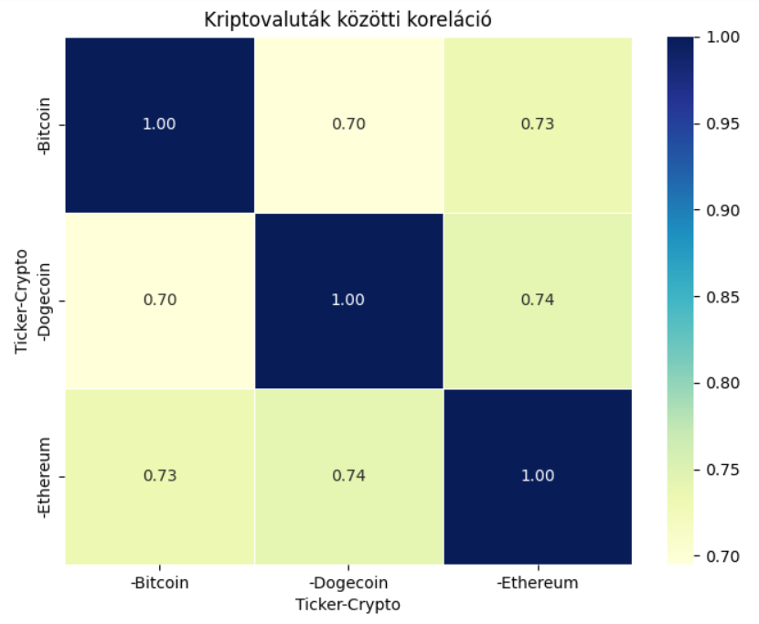

₿ Bitcoin árfolyam
Ξ Ethereum árfolyam
Ð Dogecoin árfolyam
📉 5 éves mozgóátlag – Árfolyamváltozás összehasonlítás
🔍 Normalizált árfolyamok (log skála)
🔥 Havi átlagos forgalom hőtérképen (Bitcoin, Ethereum, Dogecoin)
Bitcoin
Ethereum
Dogecoin
🕯️ Gyertyadiagramok – Árfolyamok alakulása
Bitcoin
Ethereum
Dogecoin
💰 Piaci kapitalizáció és forgalom összehasonlítása
📊 30 napos volatilitás – Kriptovaluták összehasonlítása
A kriptovaluták piacán a volatilitás az egyik legfontosabb tényező. A standard deviation (SD) segítségével megmérhetjük a piaci ingadozásokat.
Miért hasznos?
Megmutatja, hogy a piacon mennyire ingadozik az árfolyam.
A magas volatilitás jelezhet nagy kockázatot, míg az alacsony volatilitás stabilitást.
Forgalom időbeli alakulása

Kriptók közötti korreláció
